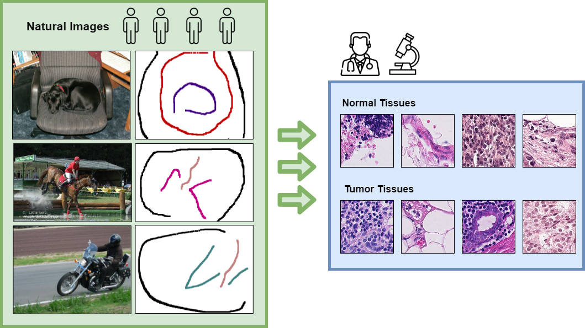
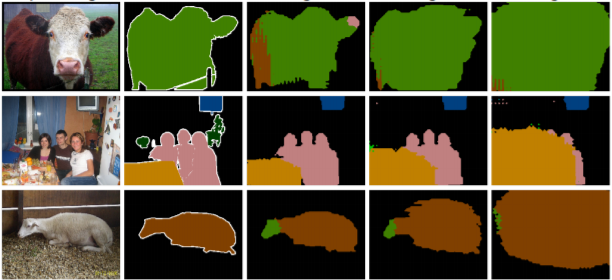
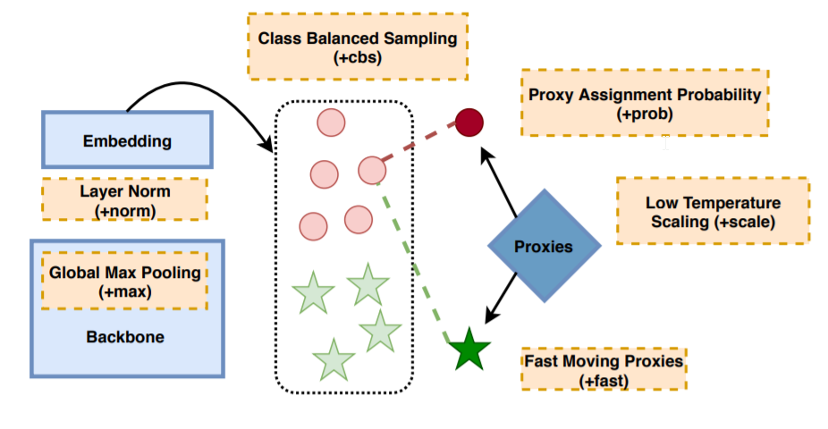
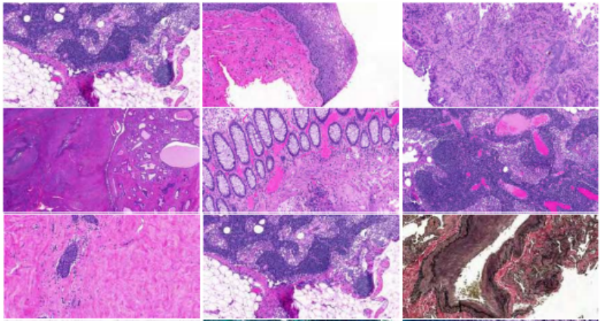
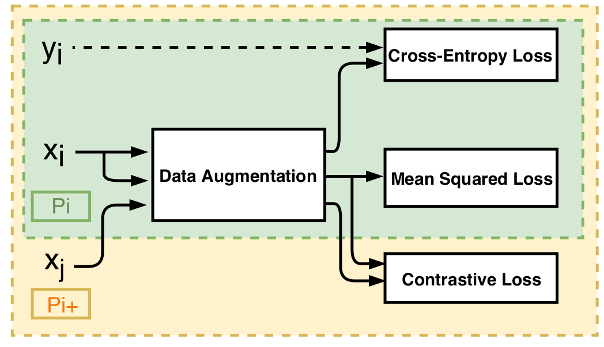
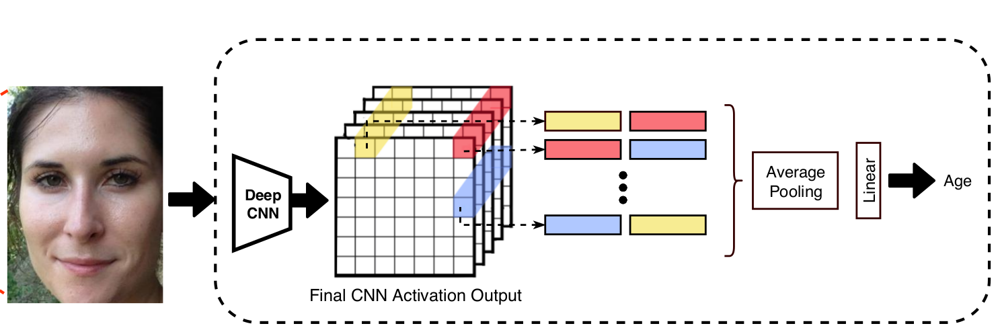

Eu Wern Teh
Research Assistant
Machine Learning Research Group
School of Engineeering
University of Guelph
Email: euwern1987@gmail.com
CV •
Google Scholar
About Me
I am a Ph.D. candidate at the University of Guelph where I am advised by Prof. Graham Taylor. I received both of my M.Sc. and B.Sc degree in Computer Science from the University of Manitoba. My research is focused on annotation-efficient learning, a.k.a learning with less label, where I explore ways to survive in a SParsely Annotated Data Environment (SPADE).
Recent News
- NEW 01/2022: My paper about annotation-efficient learning via Scribble Supervision is accepted to ISBI 2022!
- NEW 10/2021: I passed my qualifying exam and am now officially a Ph.D. Candidate!
- NEW 03/2021: My paper about semi-supervised semantic segmentation is released in arxiv!
- 07/2020: My paper about metric learning is accepted to ECCV 2020!
- 05/2020: I have started my research internship with Modiface.
- 01/2020: My paper about annotation-efficient learning is accepted to ISBI 2020!
- 05/2019: I have a paper accepted to MIDL 2019!
- 04/2019: I have a paper accepted to CRV 2019!
- 07/2018: Attended ANR-NSERC Deepvision Meeting in Iceland. (Canada-France research collaboration)
- 07/2018: Presented at the Machine Learning workshop in Iceland
- 07/2018: Attended 2018 Deep Learning Summer School in Toronto
- 08/2017: I have a paper accepted to VCIP 2017!
- 07/2017: I have a paper accepted to BMVC 2017!
- 07/2016: I have a paper accepted to BMVC 2016!
|
|
Research
|

|
Learning with less labels in Digital Pathology via Scribble Supervision from natural images
Eu Wern Teh and Graham Taylor
International Symposium on Biomedical Imaging (ISBI), 2022.
[paper]
|
|

|
The GIST and RIST of Iterative Self-Training for Semi-Supervised Segmentation
Eu Wern Teh and Terrance DeVries and Brendan Duke and Ruowei Jiang and Parham Aarabi and Graham Taylor
Arxiv Mar 31st, 2021.
[paper]
|
|

|
ProxyNCA++: Revisiting and Revitalizing Proxy Neighborhood Component Analysis
Eu Wern Teh and Terrance DeVries and Graham Taylor
European Conference on Computer Vision (ECCV), 2020.
[paper]
[source code]
|
|

|
Learning with less data via Weakly Labeled Patch Classification in Digital Pathology
Eu Wern Teh and Graham Taylor
International Symposium on Biomedical Imaging (ISBI), 2020.
[paper]
|
|

|
Metric Learning for Patch Classification in Digital Pathology
Eu Wern Teh and Graham Taylor
Medical Imaging with Deep Learning (MIDL), 2019.
[paper]
|
|

|
Apparent Age Estimation with Relational Networks
Eu Wern Teh and Graham Taylor
Conference on Computer and Robot Vision (CRV), 2019.
[paper]
[source code]
|
|
|
Object Localization in Weakly Labeled Data Using Regularized Attention Networks
Eu Wern Teh, Zhenyu Guo and Yang Wang
Vision Communications and Image Processing (VCIP), 2017.
[paper]
|

|
Adapting Object Detectors from Images to Weakly Labeled Videos
Omit Chanda, Eu Wern Teh, Mrigank Rochan, Zhenyu Guo, and Yang Wang
British Machine Vision Conference (BMVC), 2017.
[paper]
|
|
|
Attention Networks for Weakly Supervised Object Localization
Eu Wern Teh, Mrigank Rochan, and Yang Wang
British Machine Vision Conference (BMVC), 2016.
[paper]
|
|
|
Visual Analytics of Social Networks: Mining and Visualizing Co-authorship Networks
Carson Leung, Christopher Carmichael, Eu Wern Teh
Foundations of Augmented Cognition. (FAC), 2011.
[paper]
|
|